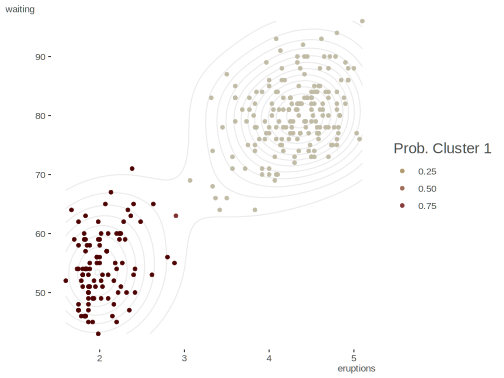
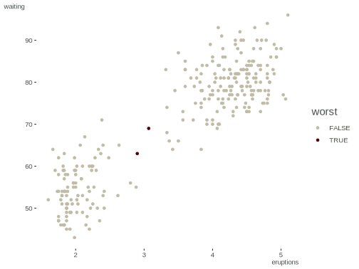
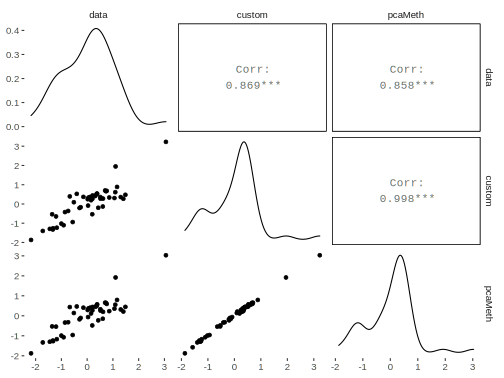

Expectation-Maximization
Mixture Model
The following code is based on algorithms noted in Murphy, 2012 Probabilistic Machine Learning, specifically, Chapter 11, section 4.
Data Setup
This example uses Old Faithful geyser eruptions. This is only a univariate mixture for either eruption time or wait time. The next example will be doing both variables, i.e. multivariate normal. ‘Geyser’ is supposedly more accurate, though seems to have arbitrarily assigned some duration values. See also http://www.geyserstudy.org/geyser.aspx?pGeyserNo=OLDFAITHFUL, but that only has intervals. Some July 1995 data is available.
eruptions waiting
1 3.600 79
2 1.800 54
3 3.333 74
4 2.283 62
5 4.533 85
6 2.883 55Function
em_mixture = function(
params,
X,
clusters = 2,
tol = .00001,
maxits = 100,
showits = TRUE
) {
# Arguments are starting parameters (means, covariances, cluster probability),
# data, number of clusters desired, tolerance, maximum iterations, and whether
# to show iterations
# Starting points
N = nrow(X)
nams = names(params)
mu = params$mu
var = params$var
probs = params$probs
# Other initializations
# initialize cluster 'responsibilities', i.e. probability of cluster
# membership for each observation i
ri = matrix(0, ncol = clusters, nrow = N)
it = 0
converged = FALSE
if (showits) # Show iterations
cat(paste("Iterations of EM:", "\n"))
while ((!converged) & (it < maxits)) {
probsOld = probs
muOld = mu
varOld = var
riOld = ri
# E
# Compute responsibilities
for (k in 1:clusters){
ri[, k] = probs[k] * dnorm(X, mu[k], sd = sqrt(var[k]), log = FALSE)
}
ri = ri/rowSums(ri)
# M
rk = colSums(ri) # rk is the weighted average cluster membership size
probs = rk/N
mu = (t(X) %*% ri) / rk
var = (t(X^2) %*% ri) / rk - mu^2
# could do mu and var via log likelihood here, but this is more straightforward
parmlistold = rbind(probsOld, muOld, varOld)
parmlistcurrent = rbind(probs, mu, var)
it = it + 1
# if showits true, & it =1 or divisible by 5 print message
if (showits & it == 1 | it%%5 == 0)
cat(paste(format(it), "...", "\n", sep = ""))
converged = max(abs(parmlistold - parmlistcurrent)) <= tol
}
clust = which(round(ri) == 1, arr.ind = TRUE) # create cluster membership
clust = clust[order(clust[, 1]), 2] # order according to row rather than cluster
out = list(
probs = probs,
mu = mu,
var = var,
resp = ri,
cluster = clust
)
out
} Estimation
Starting parameters, requires mean, variance and class probability. Note that starts for mean must be within the data range or it will break.
params1 = list(mu = c(2, 5),
var = c(1, 1),
probs = c(.5, .5))
params2 = list(mu = c(50, 90),
var = c(1, 15),
probs = c(.5, .5)) Iterations of EM:
1...
5...
10...
15...
20...
25...
30...Iterations of EM:
1...
5...
10...
15...
20...
25...
30...
35...
40...
45...
50...
55...Comparison
Compare to flexmix package results.
library(flexmix)
flex_erupt = flexmix(eruptions ~ 1,
k = 2,
control = list(tolerance = 1e-8, iter.max = 100))
flex_wait = flexmix(wait_times ~ 1,
k = 2,
control = list(tolerance = 1e-8, iter.max = 100))The following provides means, variances and probability of group membership. Note that the cluster label is arbitrary so cluster 1 for one model may be cluster 2 in another.
Eruptions
mean_var = rbind(mix_erupt$mu, sqrt(mix_erupt$var))
rownames(mean_var) = c('means', 'variances')
colnames(mean_var) = c('cluster 1', 'cluster 2')
mean_var_flex = parameters(flex_erupt)
rownames(mean_var_flex) = c('means', 'variances')
colnames(mean_var_flex) = c('cluster 1 flex', 'cluster 2 flex')
prob_membership = mix_erupt$probs
prob_membership_flex = flex_erupt@size / sum(flex_erupt@size)
list(
params = cbind(mean_var, mean_var_flex),
clusterpobs = cbind(prob_membership, prob_membership_flex)
)$params
cluster 1 cluster 2 cluster 1 flex cluster 2 flex
means 2.0186078 4.2733434 4.2733678 2.0186385
variances 0.2356218 0.4370631 0.4378355 0.2361098
$clusterpobs
prob_membership prob_membership_flex
1 0.3484046 0.6507353
2 0.6515954 0.3492647Waiting
mean_var = rbind(mix_waiting$mu, sqrt(mix_waiting$var))
rownames(mean_var) = c('means', 'variances')
colnames(mean_var) = c('cluster 1', 'cluster 2')
mean_var_flex = parameters(flex_wait)
rownames(mean_var_flex) = c('means', 'variances')
colnames(mean_var_flex) = c('cluster 1 flex', 'cluster 2 flex')
prob_membership = mix_waiting$probs
prob_membership_flex = flex_wait@size / sum(flex_wait@size)
list(
params = cbind(mean_var, mean_var_flex),
clusterpobs = cbind(prob_membership, prob_membership_flex)
)$params
cluster 1 cluster 2 cluster 1 flex cluster 2 flex
means 54.614856 80.091069 54.616140 80.090678
variances 5.871219 5.867734 5.884422 5.879634
$clusterpobs
prob_membership prob_membership_flex
1 0.3608861 0.3639706
2 0.6391139 0.6360294
ggplot(aes(x = eruptions, y = waiting), data = faithful) +
geom_point(aes(color = factor(mix_waiting$cluster))) +
geom_density2d() +
theme_minimal()
faithful %>%
mutate(prob_clus_1 = mix_waiting$resp[, 1]) %>%
ggplot(aes(x = eruptions, y = waiting)) +
geom_point(aes(color = prob_clus_1)) +
geom_density2d() +
theme_minimal()
Supplemental Example
This uses the MASS version (reversed columns). These don’t look even remotely the same data on initial inspection- geyser is even more rounded and of opposite conclusion. Turns out geyser is offset by 1, such that duration 1 should be coupled with waiting 2 and on down. Still the rounding at 2 and 4 (and whatever division was done on duration) makes this fairly poor data.
I’ve cleaned this up a little bit in case someone wants to play with it for additional practice, but it’s not evaluated.
library(MASS)
geyser = data.frame(duration = geyser$duration[-299], waiting = geyser$waiting[-1])
# compare to faithful
layout(1:2)
plot(faithful)
plot(geyser)
X3 = matrix(geyser[,1])
X4 = matrix(geyser[,2])
# MASS version
test3 = em_mixture(params1, X = X3, tol = 1e-8)
test4 = em_mixture(params2, X = X4, tol = 1e-8)
flexmod3 = flexmix(X3 ~ 1,
k = 2,
control = list(tolerance = 1e-8, iter.max = 100))
flexmod4 = flexmix(X4 ~ 1,
k = 2,
control = list(tolerance = 1e-8, iter.max = 100))
# note variability differences compared to faithful dataset
# Eruptions/Duration
mean_var = rbind(test3$mu, sqrt(test3$var))
rownames(mean_var) = c('means', 'variances')
mean_var_flex = parameters(flexmod3)
rownames(mean_var_flex) = c('means', 'variances')
prob_membership = test3$probs
prob_membership_flex = flexmod3@size / sum(flexmod3@size)
list(
params = cbind(mean_var, mean_var_flex),
clusterpobs = cbind(prob_membership, prob_membership_flex)
)
# Waiting
mean_var = rbind(test4$mu, sqrt(test4$var))
rownames(mean_var) = c('means', 'variances')
mean_var_flex = parameters(flexmod4)
rownames(mean_var_flex) = c('means', 'variances')
prob_membership = test4$probs
prob_membership_flex = flexmod4@size / sum(flexmod4@size)
list(
params = cbind(mean_var, mean_var_flex),
clusterpobs = cbind(prob_membership, prob_membership_flex)
)
# Some plots
library(ggplot2)
qplot(x = eruptions, y = waiting, data = faithful) + theme_minimal()
ggplot(aes(x = eruptions, y = waiting), data = faithful) +
geom_point(aes(color = factor(mix_waiting$cluster))) +
theme_minimal()
ggplot(aes(x = eruptions, y = waiting), data = faithful) +
geom_point(aes(color = mix_waiting$resp[, 1])) +
theme_minimal()Source
Original code available at https://github.com/m-clark/Miscellaneous-R-Code/blob/master/ModelFitting/EM%20Examples/EM%20Mixture.R
Multivariate Mixture Model
The following code is based on algorithms noted in Murphy, 2012 Probabilistic Machine Learning. Specifically, Chapter 11, section 4.
Function
em_mixture = function(
params,
X,
clusters = 2,
tol = .00001,
maxits = 100,
showits = TRUE
) {
# Arguments are
# params: starting parameters (means, covariances, cluster probability)
# X: data
# clusters: number of clusters desired
# tol: tolerance
# maxits: maximum iterations
# showits: whether to show iterations
require(mvtnorm)
# Starting points
N = nrow(X)
mu = params$mu
var = params$var
probs = params$probs
# initializations
# cluster 'responsibilities', i.e. probability of cluster membership for each
# observation i
ri = matrix(0, ncol=clusters, nrow=N)
ll = 0 # log likelihood
it = 0 # iteration count
converged = FALSE # convergence
# Show iterations if showits == true
if (showits)
cat(paste("Iterations of EM:", "\n"))
while (!converged & it < maxits) {
probsOld = probs
# muOld = mu # Use direct values or loglike for convergence check
# varOld = var
llOld = ll
riOld = ri
### E
# Compute responsibilities
for (k in 1:clusters){
ri[,k] = probs[k] * dmvnorm(X, mu[k, ], sigma = var[[k]], log = FALSE)
}
ri = ri/rowSums(ri)
### M
rk = colSums(ri) # rk is weighted average cluster membership size
probs = rk/N
for (k in 1:clusters){
varmat = matrix(0, ncol = ncol(X), nrow = ncol(X)) # initialize to sum matrices
for (i in 1:N){
varmat = varmat + ri[i,k] * X[i,]%*%t(X[i,])
}
mu[k,] = (t(X) %*% ri[,k]) / rk[k]
var[[k]] = varmat/rk[k] - mu[k,]%*%t(mu[k,])
ll[k] = -.5*sum( ri[,k] * dmvnorm(X, mu[k,], sigma = var[[k]], log = TRUE) )
}
ll = sum(ll)
### compare old to current for convergence
parmlistold = c(llOld, probsOld) # c(muOld, unlist(varOld), probsOld)
parmlistcurrent = c(ll, probs) # c(mu, unlist(var), probs)
it = it + 1
# if showits true, & it =1 or modulo of 5 print message
if (showits & it == 1 | it%%5 == 0)
cat(paste(format(it), "...", "\n", sep = ""))
converged = min(abs(parmlistold - parmlistcurrent)) <= tol
}
clust = which(round(ri) == 1, arr.ind = TRUE) # create cluster membership
clust = clust[order(clust[,1]), 2] # order accoring to row rather than cluster
out = list(
probs = probs,
mu = mu,
var = var,
resp = ri,
cluster = clust,
ll = ll
)
out
} Example 1: Old Faithful eruptions
This example uses Old Faithful geyser eruptions. This is can be compared to the univariate code from the other chapter. See also http://www.geyserstudy.org/geyser.aspx?pGeyserNo=OLDFAITHFUL
Estimation
Create starting values and estimate.
mustart = rbind(c(3, 60), c(3, 60.1)) # must be at least slightly different
covstart = list(cov(faithful), cov(faithful))
probs = c(.01, .99)
# params is a list of mu, var, and probs
starts = list(mu = mustart, var = covstart, probs = probs) mix_faithful = em_mixture(
params = starts,
X = as.matrix(faithful),
clusters = 2,
tol = 1e-12,
maxits = 1500,
showits = TRUE
)Iterations of EM:
1...
5...
10...
15...
20...
25...
30...
35...
40...
45...
50...
55...
60...
65...
70...
75...
80...List of 6
$ probs : num [1:2] 0.356 0.644
$ mu : num [1:2, 1:2] 2.04 4.29 54.48 79.97
$ var :List of 2
..$ : num [1:2, 1:2] 0.0692 0.4352 0.4352 33.6973
.. ..- attr(*, "dimnames")=List of 2
.. .. ..$ : NULL
.. .. ..$ : chr [1:2] "eruptions" "waiting"
..$ : num [1:2, 1:2] 0.17 0.941 0.941 36.046
.. ..- attr(*, "dimnames")=List of 2
.. .. ..$ : NULL
.. .. ..$ : chr [1:2] "eruptions" "waiting"
$ resp : num [1:272, 1:2] 2.59e-09 1.00 8.42e-06 1.00 1.00e-21 ...
$ cluster: int [1:272] 2 1 2 1 2 1 2 2 1 2 ...
$ ll : num 477Visualize.
library(ggplot2)
ggplot(aes(x = eruptions, y = waiting), data = faithful) +
geom_point(aes(color = factor(mix_faithful$cluster))) +
theme_minimal()
faithful %>%
mutate(prob_clus_1 = mix_faithful$resp[, 1]) %>%
ggplot(aes(x = eruptions, y = waiting)) +
geom_point(aes(color = prob_clus_1)) +
theme_minimal()
# relatively speaking, these are extremely well-separated clusters
worst = apply(mix_faithful$resp, 1, function(x) max(x) < .99)
ggplot(aes(x = eruptions, y = waiting), data = faithful) +
geom_point(aes(color = worst)) +
theme_minimal()
Comparison
Compare to mclust results.
library(mclust)
# options are set to be more similar
mix_mclust = Mclust(
faithful[, 1:2],
2,
modelNames = 'VVV',
control = emControl(tol = 1e-12)
)
str(mix_mclust, 1)List of 16
$ call : language Mclust(data = faithful[, 1:2], G = 2, modelNames = "VVV", control = emControl(tol = 1e-12))
$ data : num [1:272, 1:2] 3.6 1.8 3.33 2.28 4.53 ...
..- attr(*, "dimnames")=List of 2
$ modelName : chr "VVV"
$ n : int 272
$ d : int 2
$ G : int 2
$ BIC : 'mclustBIC' num [1, 1] -2322
..- attr(*, "dimnames")=List of 2
..- attr(*, "G")= num 2
..- attr(*, "modelNames")= chr "VVV"
..- attr(*, "control")=List of 4
..- attr(*, "initialization")=List of 3
..- attr(*, "warn")= logi FALSE
..- attr(*, "n")= int 272
..- attr(*, "d")= int 2
..- attr(*, "oneD")= logi FALSE
..- attr(*, "criterion")= chr "BIC"
..- attr(*, "returnCodes")= num [1, 1] 0
.. ..- attr(*, "dimnames")=List of 2
$ loglik : num -1130
$ df : num 11
$ bic : num -2322
$ icl : num -2323
$ hypvol : num NA
$ parameters :List of 4
$ z : num [1:272, 1:2] 1.00 1.91e-09 1.00 1.07e-05 1.00 ...
..- attr(*, "dimnames")=List of 2
$ classification: Named num [1:272] 1 2 1 2 1 2 1 1 2 1 ...
..- attr(*, "names")= chr [1:272] "1" "2" "3" "4" ...
$ uncertainty : Named num [1:272] 2.59e-09 1.91e-09 8.42e-06 1.07e-05 0.00 ...
..- attr(*, "names")= chr [1:272] "1" "2" "3" "4" ...
- attr(*, "class")= chr "Mclust" [,1] [,2]
[1,] 2.036388 4.289662
[2,] 54.478516 79.968115 [,1] [,2]
eruptions 4.289662 2.036388
waiting 79.968115 54.478517[[1]]
eruptions waiting
[1,] 0.06916767 0.4351676
[2,] 0.43516762 33.6972821
[[2]]
eruptions waiting
[1,] 0.1699684 0.9406093
[2,] 0.9406093 36.0462113, , 1
eruptions waiting
eruptions 0.1699684 0.9406089
waiting 0.9406089 36.0462071
, , 2
eruptions waiting
eruptions 0.06916769 0.4351678
waiting 0.43516784 33.6972835# compare classifications, reverse in case arbitrary numbering of one of them is opposite
table(mix_faithful$cluster, mix_mclust$classification)
1 2
1 0 97
2 175 0
1 2
1 175 0
2 0 97Example 2: Iris data set
Estimation
Run and examine. We add noise to our starting value, and the function is notably sensitive to starts, but don’t want to cheat too badly.
mustart = iris %>%
group_by(Species) %>%
summarise(across(.fns = function(x) mean(x) + runif(1, 0, .5))) %>%
select(-Species) %>%
as.matrix()
# use purrr::map due to mclust::map
covstart = iris %>%
split(.$Species) %>%
purrr::map(select, -Species) %>%
purrr::map(function(x) cov(x) + diag(runif(4, 0, .5)))
probs = c(.1, .2, .7)
starts = list(mu = mustart, var = covstart, probs = probs)mix_mclust_iris = em_mixture(
params = starts,
X = as.matrix(iris2),
clusters = 3,
tol = 1e-8,
maxits = 1500,
showits = T
)Iterations of EM:
1...
setosa versicolor virginica
1 50 0 0
2 0 48 0
3 0 2 50Source
Original code available at https://github.com/m-clark/Miscellaneous-R-Code/blob/master/ModelFitting/EM%20Examples/EM%20Mixture%20MV.R
Probit Model
The following regards models for a binary response. See Murphy, 2012 Probabilistic Machine Learning Chapter 11.4.
Data Setup
Probit via Maximum Likelihood
Function
We’ll start with the a basic maximum likelihood function for a standard probit. See the [logistic regression][Standard Logistic] example as comparison.
probit_mle = function(params, X, y){
# Arguments are starting parameters (coefficients), model matrix, response
b = params
mu = X %*% b # linear predictor
# compute the log likelihood either way
# ll = sum(y * pnorm(mu, log.p = TRUE) + (1 - y) * pnorm(-mu, log.p = TRUE))
ll = sum(dbinom(y, 1, prob = pnorm(mu), log = TRUE))
-ll
}Estimation
Estimate with optim.
# input data
X = as.matrix(cbind(1, admission[, 2:4]))
y = as.matrix(admission[, 1])
init = c(0, 0, 0, 0)
# Can set tolerance really low to duplicate glm result
result_mle = optim(
par = init,
fn = probit_mle,
X = X,
y = y,
control = list(maxit = 1000, reltol = 1e-12)
)
# extract coefficients
coefs_mle = result_mle$parComparison
glm_probit = glm(
admit ~ gre + gpa + rank,
family = binomial(link = "probit"),
control = list(maxit = 500, epsilon = 1e-8),
data = admission
)
summary(glm_probit)
Call:
glm(formula = admit ~ gre + gpa + rank, family = binomial(link = "probit"),
data = admission, control = list(maxit = 500, epsilon = 1e-08))
Deviance Residuals:
Min 1Q Median 3Q Max
-1.5626 -0.8920 -0.6403 1.1631 2.2097
Coefficients:
Estimate Std. Error z value Pr(>|z|)
(Intercept) -2.0915039 0.6718360 -3.113 0.00185 **
gre 0.0013982 0.0006487 2.156 0.03112 *
gpa 0.4643599 0.1950263 2.381 0.01727 *
rank -0.3317117 0.0745524 -4.449 8.61e-06 ***
---
Signif. codes: 0 '***' 0.001 '**' 0.01 '*' 0.05 '.' 0.1 ' ' 1
(Dispersion parameter for binomial family taken to be 1)
Null deviance: 499.98 on 399 degrees of freedom
Residual deviance: 459.48 on 396 degrees of freedom
AIC: 467.48
Number of Fisher Scoring iterations: 4Compare.
(Intercept) gre gpa rank
coefs_mle -2.091510 0.001398222 0.4643609 -0.3317105
coefs_glm -2.091504 0.001398222 0.4643599 -0.3317117EM for Latent Variable Approach to Probit
Function
em_probit = function(
params,
X,
y,
tol = .00001,
maxits = 100,
showits = TRUE
) {
# Arguments are starting parameters (coefficients), model matrix, response,
# tolerance, maximum iterations, and whether to show iterations
#starting points
b = params
mu = X%*%b
it = 0
converged = FALSE
z = rnorm(length(y)) # z is the latent variable ~N(0,1)
# Show iterations
if (showits)
cat(paste("Iterations of EM:", "\n"))
# while no convergence and we haven't reached our max iterations do this stuff
while ((!converged) & (it < maxits)) {
z_old = z # create 'old' values for comparison
# E step create a new z based on current values
z = ifelse(
y == 1,
mu + dnorm(mu) / pnorm(mu),
mu - dnorm(mu) / pnorm(-mu)
)
# M step estimate b
b = solve(t(X)%*%X) %*% t(X)%*%z
mu = X%*%b
ll = sum(y * pnorm(mu, log.p = TRUE) + (1 - y) * pnorm(-mu, log.p = TRUE))
it = it + 1
if (showits & (it == 1 | it%%5 == 0))
cat(paste(format(it), "...", "\n", sep = ""))
converged = max(abs(z_old - z)) <= tol
}
# Show last iteration
if (showits)
cat(paste0(format(it), "...", "\n"))
list(b = t(b), ll = ll)
}Estimation
Use the same setup and starting values to estimate the parameters.
# can lower tolerance to duplicate glm result
result_em = em_probit(
params = init,
X = X,
y = y,
tol = 1e-12,
maxit = 100
)Iterations of EM:
1...
5...
10...
15...
20...
25...
30...
35...
40...
45...
50...
51...Comparison
Compare all results.
(Intercept) gre gpa rank
coefs_glm -2.091504 0.001398222 0.4643599 -0.3317117
coefs_mle -2.091510 0.001398222 0.4643609 -0.3317105
admit -2.091504 0.001398222 0.4643599 -0.3317117 [,1]
[1,] -229.7404
[2,] 844.4590
[3,] -229.7404Visualize
Show estimates over niter iterations and visualize.
X2 = X
X2[, 2:3] = scale(X2[, 2:3])
niter = 20
result_em = map_df(1:niter, function(x)
as_tibble(
em_probit(
params = init,
X = X2,
y = y,
tol = 1e-8,
maxit = x,
showits = F
)$b)
)
gdat = result_em %>%
rowid_to_column('iter') %>%
pivot_longer(-iter, names_to = 'coef') %>%
mutate(
coef = factor(coef, labels = c('Intercept', 'gre', 'gpa', 'rank'))
) %>%
arrange(iter, coef)
ggplot(aes(x = iter, y = value), data = gdat) +
geom_line(aes(group = coef, color = coef)) +
theme_minimal()
Source
Original code available at https://github.com/m-clark/Miscellaneous-R-Code/blob/master/ModelFitting/EM%20Examples/EM%20algorithm%20for%20probit%20example.R
PCA
The following is an EM algorithm for principal components analysis. See Murphy, 2012 Probabilistic Machine Learning 12.2.5. Some of the constructed object is based on output from pca function used below.
Data Setup
state.x77 is from base R, which includes various state demographics. We will first standardize the data.
Function
em_pca = function(
X,
nComp = 2,
tol = .00001,
maxits = 100,
showits = TRUE
) {
# Arguments
# X: numeric data
# nComp: number of components
# tol = tolerance level
# maxits: maximum iterations
# showits: show iterations
# starting points and other initializations
N = nrow(X)
D = ncol(X)
L = nComp
Xt = t(X)
Z = t(replicate(L, rnorm(N))) # latent variables
W = replicate(L, rnorm(D)) # loadings
it = 0
converged = FALSE
if (showits)
cat(paste("Iterations of EM:", "\n"))
# while no convergence and we haven't reached our max iterations do this stuff
while ((!converged) & (it < maxits)) {
Z_old = Z # create 'old' values for comparison
Z = solve(t(W)%*%W) %*% crossprod(W, Xt) # E
W = Xt%*%t(Z) %*% solve(tcrossprod(Z)) # M
it = it + 1
# if showits, show first and every 5th iteration
if (showits & (it == 1 | it%%5 == 0))
cat(paste(format(it), "...", "\n", sep = ""))
converged = max(abs(Z_old-Z)) <= tol
}
# calculate reconstruction error
Xrecon = W %*% Z
reconerr = sum((Xrecon - t(X))^2)
# orthogonalize
W = pracma::orth(W) # for orthonormal basis of W; pcaMethods package has also
evs = eigen(cov(X %*% W))
evals = evs$values
evecs = evs$vectors
W = W %*% evecs
Z = X %*% W
if (showits) # Show last iteration
cat(paste0(format(it), "...", "\n"))
list(
scores = Z,
loadings = W,
reconerr = reconerr,
Xrecon = t(Xrecon)
)
}Estimation
Iterations of EM:
1...
5...
10...
15...
20...
25...
30...
35...
40...
45...
50...
55...
60...
65...
70...
70...$scores
[,1] [,2]
Alabama -3.78988728 0.23477897
Alaska 1.05313550 -5.45617512
Arizona -0.86742876 -0.74506148
Arkansas -2.38177761 1.28834366
California -0.24138147 -3.50952277
Colorado 2.06218136 -0.50566387
Connecticut 1.89943583 0.24300645
Delaware 0.42478394 0.50791950
Florida -1.17212341 -1.13474136
Georgia -3.29417162 -0.10995684
Hawaii 0.48704129 -0.12526216
Idaho 1.42342916 0.61114319
Illinois -0.11896424 -1.28238783
Indiana 0.47120189 0.24520088
Iowa 2.32181208 0.53685609
Kansas 1.90151483 0.07719072
Kentucky -2.12935981 1.06425233
Louisiana -4.24100842 0.34630079
Maine 0.96019374 1.70241922
Maryland 0.20342599 -0.38881112
Massachusetts 1.19589376 0.21865625
Michigan -0.18186944 -0.84711636
Minnesota 2.43361605 0.36533543
Mississippi -4.03208863 1.05124066
Missouri -0.31125449 0.14830589
Montana 1.37887297 0.03353877
Nebraska 2.18101665 0.54774825
Nevada 1.12708455 -1.13291366
New Hampshire 1.67128925 1.31239813
New Jersey 0.64958222 -0.28146986
New Mexico -1.32244692 0.29357041
New York -1.05034998 -1.89371072
North Carolina -2.69433377 0.51713890
North Dakota 2.41766786 0.78192203
Ohio 0.26795708 -0.41685336
Oklahoma -0.07391320 0.64658337
Oregon 1.32472856 -0.22767511
Pennsylvania -0.07738173 -0.26940938
Rhode Island 0.74084731 1.46130325
South Carolina -3.71100631 0.90984427
South Dakota 2.01253414 1.31509491
Tennessee -2.21813394 0.65102504
Texas -2.41364282 -2.32744119
Utah 2.26283736 0.53433138
Vermont 1.36926611 1.50938322
Virginia -0.99354796 -0.18457034
Washington 1.34001299 -0.51154448
West Virginia -1.50662213 1.60198375
Wisconsin 1.75754046 0.63572738
Wyoming 1.48379101 -0.04225606
$loadings
[,1] [,2]
[1,] -0.12642809 -0.41087417
[2,] 0.29882991 -0.51897884
[3,] -0.46766917 -0.05296872
[4,] 0.41161037 0.08165611
[5,] -0.44425672 -0.30694934
[6,] 0.42468442 -0.29876662
[7,] 0.35741244 0.15358409
[8,] 0.03338461 -0.58762446
$reconerr
[1] 135.6901
$Xrecon
Population Income Illiteracy Life Exp Murder HS Grad Frost Area
Alabama 0.38268358 -1.25437699 1.759977489 -1.54078578 1.611617628 -1.67965020 -1.31849456 -0.26448579
Alaska 2.10865553 3.14634780 -0.203512400 -0.01204852 1.206906839 2.07737324 -0.46157798 3.24134051
Arizona 0.41579388 0.12745748 0.445134639 -0.41788150 0.614057185 -0.14578398 -0.42445943 0.40885758
Arkansas -0.22822355 -1.38036948 1.045642041 -0.87516325 0.662664464 -1.39641793 -0.65340786 -0.83657698
California 1.47248966 1.74923604 0.298781592 -0.38592908 1.184481039 0.94601731 -0.62527962 2.05422301
Colorado -0.05295342 0.87867032 -0.937634273 0.80752470 -0.760924727 1.02685178 0.65938735 0.36598559
Connecticut -0.33998711 0.44149303 -0.901179312 0.80167045 -0.918427793 0.73405859 0.71620393 -0.07938460
Delaware -0.26239562 -0.13666132 -0.225562197 0.21632020 -0.344618674 0.02864973 0.22983142 -0.28428468
Florida 0.61442524 0.23864122 0.608271775 -0.57511671 0.869031809 -0.15875971 -0.59320972 0.62767090
Georgia 0.46165424 -0.92733174 1.546406772 -1.36489386 1.497209045 -1.36613193 -1.19426555 -0.04536132
Hawaii -0.01010871 0.21055091 -0.221139217 0.19024283 -0.177922225 0.24426300 0.15483634 0.08986680
Idaho -0.43106438 0.10819283 -0.698065403 0.63580178 -0.819957964 0.42191900 0.60261317 -0.31160205
Illinois 0.54194046 0.62998207 0.123562347 -0.15368171 0.446478763 0.33261242 -0.23947367 0.74959089
Indiana -0.16031986 0.01355515 -0.233354573 0.21397374 -0.284598854 0.12685427 0.20607238 -0.12835514
Iowa -0.51412256 0.41520995 -1.114276503 0.99951952 -1.196268234 0.82564274 0.91229709 -0.23795697
Kansas -0.27212055 0.52816916 -0.893368551 0.78898632 -0.868454375 0.78448171 0.69148033 0.01812218
Kentucky -0.16806291 -1.18864084 0.939463847 -0.78956388 0.619310844 -1.22226901 -0.59760746 -0.69646856
Louisiana 0.39389653 -1.44706295 1.965045766 -1.71736548 1.777799672 -1.90455332 -1.46260289 -0.34507925
Maine -0.82087554 -0.59658494 -0.539227972 0.53423863 -0.949128976 -0.10084671 0.60464971 -0.96832748
Maryland 0.13403369 0.26257452 -0.074541237 0.05198345 0.028971956 0.20255563 0.01299178 0.23526623
Massachusetts -0.24103476 0.24389086 -0.570864580 0.51009689 -0.598400225 0.44255026 0.46100943 -0.08856331
Michigan 0.37105164 0.38528744 0.129925395 -0.14403157 0.340818527 0.17585298 -0.19510600 0.49171466
Minnesota -0.45778431 0.53763591 -1.157478542 1.03153348 -1.193289744 0.92436879 0.92591437 -0.13343470
Mississippi 0.07784161 -1.75048034 1.830000664 -1.57380929 1.468604826 -2.02644084 -1.27966480 -0.75234446
Missouri -0.02158375 -0.16997977 0.137708556 -0.11600550 0.092754503 -0.17649378 -0.08846880 -0.09753928
Montana -0.18810848 0.39464258 -0.646632879 0.57029706 -0.622868279 0.57556560 0.49797738 0.02632494
Nebraska -0.50079737 0.36748326 -1.049007763 0.94245607 -1.137062259 0.76259490 0.86364791 -0.24905787
Nevada 0.32298982 0.92476479 -0.467093711 0.37141038 -0.152967781 0.81713204 0.22883653 0.70335507
New Hampshire -0.75052840 -0.18167564 -0.851126498 0.79508531 -1.145321214 0.31766975 0.79890305 -0.71540190
New Jersey 0.03352326 0.34019150 -0.288880479 0.24439105 -0.202184277 0.35996125 0.18893948 0.18708463
New Mexico 0.04657394 -0.54754352 0.602917601 -0.52036105 0.497394682 -0.64933164 -0.42757124 -0.21665853
New York 0.91087056 0.66891979 0.591523732 -0.58696799 1.047898292 0.11971028 -0.66625200 1.07772522
North Carolina 0.12816045 -1.07353166 1.232664646 -1.06678818 1.038240427 -1.29874542 -0.88356411 -0.39383276
North Dakota -0.62693269 0.31667048 -1.172086124 1.05898588 -1.314075638 0.79313367 0.98419537 -0.37876361
Ohio 0.13739698 0.29641166 -0.103235078 0.07625529 0.008911129 0.23833907 0.03174915 0.25389887
Oklahoma -0.25631970 -0.35765056 0.000318234 0.02237404 -0.165631902 -0.22456731 0.07288742 -0.38241577
Oregon -0.07393708 0.51402708 -0.607475042 0.52668095 -0.518634834 0.63061330 0.43850719 0.17801302
Pennsylvania 0.12047658 0.11669379 0.050459318 -0.05385004 0.117072383 0.04762771 -0.06903419 0.15572818
Rhode Island -0.69407567 -0.53699812 -0.423874803 0.42426477 -0.777672460 -0.12196232 0.48922098 -0.83396464
South Carolina 0.09534391 -1.58114961 1.687329949 -1.45319435 1.369363378 -1.84783766 -1.18662222 -0.65853727
South Dakota -0.79477937 -0.08110103 -1.010859058 0.93576546 -1.297749324 0.46178543 0.92128241 -0.70559427
Tennessee 0.01294506 -1.00071299 1.002868892 -0.85984677 0.785589193 -1.13651148 -0.69280158 -0.45660979
Texas 1.26143772 0.48662406 1.252067903 -1.18353020 1.786683571 -0.32967476 -1.22012392 1.28708285
Utah -0.50562916 0.39889681 -1.086562111 0.97503875 -1.169293358 0.80135139 0.89083103 -0.23844224
Vermont -0.79328027 -0.37416028 -0.720313637 0.68685449 -1.071609849 0.13055266 0.72121000 -0.84123808
Virginia 0.20144755 -0.20111375 0.474428203 -0.42402594 0.498044099 -0.36680088 -0.38345347 0.07528883
Washington 0.04076514 0.66591672 -0.599586905 0.50979252 -0.438291530 0.72191506 0.40037222 0.34533187
West Virginia -0.46773439 -1.28161942 0.619745694 -0.48932954 0.177599146 -1.11845822 -0.29244627 -0.99166284
Wisconsin -0.48340644 0.19527660 -0.855621146 0.77533290 -0.975935252 0.55646593 0.72580444 -0.31489415
Wyoming -0.17023094 0.46533114 -0.691685058 0.60729331 -0.646213653 0.64276763 0.52383551 0.07436648Comparison
Extract reconstructed values and loadings for comparison.
Compare results to output from pcaMethods, which also has probabilistic PCA (demonstrated next). Note that the signs for loadings/scores may be different
library(pcaMethods) # install via BiocManager::install("pcaMethods")
result_pcam = pca(
X,
nPcs = 2,
method = 'svd',
scale = 'none',
center = FALSE
)
loadings_pcam = loadings(result_pcam)
scores_pcam = scores(result_pcam)Compare loadings and scores.
[1] 1.520589e-24 PC1 PC2
Alabama 3.79 0.23 3.79 0.23
Alaska 1.05 5.46 1.05 5.46
Arizona 0.87 0.75 0.87 0.75
Arkansas 2.38 1.29 2.38 1.29
California 0.24 3.51 0.24 3.51
Colorado 2.06 0.51 2.06 0.51
Connecticut 1.90 0.24 1.90 0.24
Delaware 0.42 0.51 0.42 0.51
Florida 1.17 1.13 1.17 1.13
Georgia 3.29 0.11 3.29 0.11
Hawaii 0.49 0.13 0.49 0.13
Idaho 1.42 0.61 1.42 0.61
Illinois 0.12 1.28 0.12 1.28
Indiana 0.47 0.25 0.47 0.25
Iowa 2.32 0.54 2.32 0.54
Kansas 1.90 0.08 1.90 0.08
Kentucky 2.13 1.06 2.13 1.06
Louisiana 4.24 0.35 4.24 0.35
Maine 0.96 1.70 0.96 1.70
Maryland 0.20 0.39 0.20 0.39
Massachusetts 1.20 0.22 1.20 0.22
Michigan 0.18 0.85 0.18 0.85
Minnesota 2.43 0.37 2.43 0.37
Mississippi 4.03 1.05 4.03 1.05
Missouri 0.31 0.15 0.31 0.15
Montana 1.38 0.03 1.38 0.03
Nebraska 2.18 0.55 2.18 0.55
Nevada 1.13 1.13 1.13 1.13
New Hampshire 1.67 1.31 1.67 1.31
New Jersey 0.65 0.28 0.65 0.28
New Mexico 1.32 0.29 1.32 0.29
New York 1.05 1.89 1.05 1.89
North Carolina 2.69 0.52 2.69 0.52
North Dakota 2.42 0.78 2.42 0.78
Ohio 0.27 0.42 0.27 0.42
Oklahoma 0.07 0.65 0.07 0.65
Oregon 1.32 0.23 1.32 0.23
Pennsylvania 0.08 0.27 0.08 0.27
Rhode Island 0.74 1.46 0.74 1.46
South Carolina 3.71 0.91 3.71 0.91
South Dakota 2.01 1.32 2.01 1.32
Tennessee 2.22 0.65 2.22 0.65
Texas 2.41 2.33 2.41 2.33
Utah 2.26 0.53 2.26 0.53
Vermont 1.37 1.51 1.37 1.51
Virginia 0.99 0.18 0.99 0.18
Washington 1.34 0.51 1.34 0.51
West Virginia 1.51 1.60 1.51 1.60
Wisconsin 1.76 0.64 1.76 0.64
Wyoming 1.48 0.04 1.48 0.04Calculate mean squared reconstruction error and compare.
[1] 0.3392252[1] 0.3392252[1] 5.120166e-13Visualize


Source
Original code available at https://github.com/m-clark/Miscellaneous-R-Code/blob/master/ModelFitting/EM%20Examples/EM%20for%20pca.R
Probabilistic PCA
The following is an EM algorithm for probabilistic principal components analysis. Based on Tipping and Bishop, 1999, and also Murphy 2012 Probabilistic ML, with some code snippets inspired by the ppca function used below. See also ModelFitting/EM Examples/EM for pca.R
Data Setup
state.x77 is from base R, which includes various state demographics. We will first standardize the data.
Function
em_ppca = function(
X,
nComp = 2,
tol = .00001,
maxits = 100,
showits = TRUE
) {
# Arguments
# X: numeric data
# nComp: number of components
# tol = tolerance level
# maxits: maximum iterations
# showits: show iterations
# require(pracma)
tr = function(x) sum(diag(x), na.rm = TRUE)
# starting points and other initializations
N = nrow(X)
D = ncol(X)
L = nComp
S = (1/N) * t(X)%*%X
evals = eigen(S)$values
evecs = eigen(S)$vectors
V = evecs[,1:L]
Lambda = diag(evals[1:L])
# latent variables
Z = t(replicate(L, rnorm(N)))
# variance; average variance associated with discarded dimensions
sigma2 = 1/(D - L) * sum(evals[(L+1):D])
# loadings; this and sigma2 starting points will be near final estimate
W = V %*% chol(Lambda - sigma2 * diag(L)) %*% diag(L)
it = 0
converged = FALSE
ll = 0
# Show iterations
if (showits)
cat(paste("Iterations of EM:", "\n"))
while ((!converged) & (it < maxits)) {
# create 'old' values for comparison
if(exists('W_new')){
W_old = W_new
}
else {
W_old = W
}
ll_old = ll
Psi = sigma2*diag(L)
M = t(W_old) %*% W_old + Psi
# E and M
W_new = S %*% W_old %*% solve( Psi + solve(M) %*% t(W_old) %*% S %*% W_old )
sigma2 = 1/D * tr(S - S %*% W_old %*% solve(M) %*% t(W_new))
Z = solve(M) %*% t(W_new) %*% t(X)
ZZ = sigma2*solve(M) + Z%*%t(Z)
# log likelihood as in paper
# ll = .5*sigma2*D + .5*tr(ZZ) + .5*sigma2 * X%*%t(X) -
# 1/sigma2 * t(Z)%*%t(W_new)%*%t(X) + .5*sigma2 * tr(t(W_new)%*%W_new%*%ZZ)
# ll = -sum(ll)
# more straightforward
ll = dnorm(X, mean = t(W_new %*% Z), sd = sqrt(sigma2), log = TRUE)
ll = -sum(ll)
it = it + 1
# if showits, show first and every 5th iteration
if (showits & (it == 1 | it%%5 == 0))
cat(paste(format(it), "...", "\n", sep = ""))
converged = max(abs(ll_old-ll)) <= tol
}
W = pracma::orth(W_new) # for orthonormal basis of W; pcaMethods package has also
evs = eigen(cov(X %*% W))
evecs = evs$vectors
W = W %*% evecs
Z = X %*% W
Xrecon = Z %*% t(W)
reconerr = sum((Xrecon - X)^2)
if (showits) # Show last iteration
cat(paste0(format(it), "...", "\n"))
list(
scores = Z,
loadings = W,
Xrecon = Xrecon,
reconerr = reconerr,
ll = ll,
sigma2 = sigma2
)
}Estimation
Iterations of EM:
1...
2...List of 6
$ scores : num [1:50, 1:2] 3.79 -1.053 0.867 2.382 0.241 ...
..- attr(*, "dimnames")=List of 2
.. ..$ : chr [1:50] "Alabama" "Alaska" "Arizona" "Arkansas" ...
.. ..$ : NULL
$ loadings: num [1:8, 1:2] 0.126 -0.299 0.468 -0.412 0.444 ...
$ Xrecon : num [1:50, 1:8] 0.383 2.109 0.416 -0.228 1.472 ...
..- attr(*, "dimnames")=List of 2
.. ..$ : chr [1:50] "Alabama" "Alaska" "Arizona" "Arkansas" ...
.. ..$ : NULL
$ reconerr: num 136
$ ll : num 369
$ sigma2 : num 0.452Comparison
Extract reconstructed values and loadings for comparison.
Compare to standard pca on full data set if desired.
standard_pca = princomp(scale(state.x77))
scores_standard_pca = standard_pca$scores[,1:2]
loadings_standard_pca = standard_pca$loadings[,1:2]
Xrecon_standard_pca = scores_standard_pca%*%t(loadings_standard_pca)Compare results to output from pcaMethods, which also has probabilistic PCA (demonstrated next). Note that the signs for loadings/scores may be different
library(pcaMethods)
results_pcam = pca(
X,
nPcs = 2,
threshold = 1e-8,
method = 'ppca',
scale = 'none',
center = FALSE
)
loadings_pcam = loadings(results_pcam)
scores_pcam = scores(results_pcam)Compare loadings and scores.
PC1 PC2 Comp.1 Comp.2
Population 0.126 0.411 0.126 0.411 0.126 0.411
Income -0.299 0.519 -0.299 0.519 -0.299 0.519
Illiteracy 0.468 0.053 0.468 0.053 0.468 0.053
Life Exp -0.412 -0.082 -0.412 -0.082 -0.412 -0.082
Murder 0.444 0.307 0.444 0.307 0.444 0.307
HS Grad -0.425 0.299 -0.425 0.299 -0.425 0.299
Frost -0.357 -0.154 -0.357 -0.154 -0.357 -0.154
Area -0.033 0.588 -0.033 0.588 -0.033 0.588[1] 3.572549e-16 PC1 PC2
Alabama 3.79 0.23 3.79 0.23
Alaska 1.05 5.46 1.05 5.46
Arizona 0.87 0.75 0.87 0.75
Arkansas 2.38 1.29 2.38 1.29
California 0.24 3.51 0.24 3.51
Colorado 2.06 0.51 2.06 0.51
Connecticut 1.90 0.24 1.90 0.24
Delaware 0.42 0.51 0.42 0.51
Florida 1.17 1.13 1.17 1.13
Georgia 3.29 0.11 3.29 0.11
Hawaii 0.49 0.13 0.49 0.13
Idaho 1.42 0.61 1.42 0.61
Illinois 0.12 1.28 0.12 1.28
Indiana 0.47 0.25 0.47 0.25
Iowa 2.32 0.54 2.32 0.54
Kansas 1.90 0.08 1.90 0.08
Kentucky 2.13 1.06 2.13 1.06
Louisiana 4.24 0.35 4.24 0.35
Maine 0.96 1.70 0.96 1.70
Maryland 0.20 0.39 0.20 0.39
Massachusetts 1.20 0.22 1.20 0.22
Michigan 0.18 0.85 0.18 0.85
Minnesota 2.43 0.37 2.43 0.37
Mississippi 4.03 1.05 4.03 1.05
Missouri 0.31 0.15 0.31 0.15
Montana 1.38 0.03 1.38 0.03
Nebraska 2.18 0.55 2.18 0.55
Nevada 1.13 1.13 1.13 1.13
New Hampshire 1.67 1.31 1.67 1.31
New Jersey 0.65 0.28 0.65 0.28
New Mexico 1.32 0.29 1.32 0.29
New York 1.05 1.89 1.05 1.89
North Carolina 2.69 0.52 2.69 0.52
North Dakota 2.42 0.78 2.42 0.78
Ohio 0.27 0.42 0.27 0.42
Oklahoma 0.07 0.65 0.07 0.65
Oregon 1.32 0.23 1.32 0.23
Pennsylvania 0.08 0.27 0.08 0.27
Rhode Island 0.74 1.46 0.74 1.46
South Carolina 3.71 0.91 3.71 0.91
South Dakota 2.01 1.32 2.01 1.32
Tennessee 2.22 0.65 2.22 0.65
Texas 2.41 2.33 2.41 2.33
Utah 2.26 0.53 2.26 0.53
Vermont 1.37 1.51 1.37 1.51
Virginia 0.99 0.18 0.99 0.18
Washington 1.34 0.51 1.34 0.51
West Virginia 1.51 1.60 1.51 1.60
Wisconsin 1.76 0.64 1.76 0.64
Wyoming 1.48 0.04 1.48 0.04Compare reconstructed data sets.
[1] 0.3392252[1] 6.414878e-09[1] 6.414878e-09Visualize


Missing Data Example
A slightly revised approach can be taken in the case of missing value.
Data Setup
Function
em_ppca_miss = function(X, nComp=2, tol=.00001, maxits=100, showits=T){
# Arguments
# X: numeric data
# nComp: number of components
# tol = tolerance level
# maxits: maximum iterations
# showits: show iterations
# require(pracma) # for orthonormal basis of W; pcaMethods package has also
tr = function(x) sum(diag(x), na.rm = TRUE)
# starting points and other initializations
X_orig = X
X = X
N = nrow(X_orig)
D = ncol(X_orig)
L = nComp
NAs = is.na(X_orig)
X[NAs] = 0
S = (1/N) * t(X)%*%X
evals = eigen(S)$values
evecs = eigen(S)$vectors
V = evecs[,1:L]
Lambda = diag(evals[1:L])
# latent variables
Z = t(replicate(L, rnorm(N)))
# variance; average variance associated with discarded dimensions
sigma2 = 1/(D-L) * sum(evals[(L+1):D])
# loadings
W = V %*% chol(Lambda-sigma2*diag(L)) %*% diag(L)
it = 0
converged = FALSE
ll = 0
# Show iterations
if (showits)
cat(paste("Iterations of EM:", "\n"))
while ((!converged) & (it < maxits)) {
if(exists('W_new')){
W_old = W_new
}
else {
W_old = W
}
ll_old = ll
# deal with missingness via projection
proj = t(W_old%*%Z)
X_new = X_orig
X_new[NAs] = proj[NAs]
X = X_new
Psi = sigma2*diag(L)
M = t(W_old) %*% W_old + Psi
# E and M
W_new = S %*% W_old %*% solve( Psi + solve(M)%*%t(W_old)%*%S%*%W_old )
sigma2 = 1/D * tr(S - S%*%W_old%*%solve(M)%*%t(W_new))
Z = solve(M)%*%t(W_new)%*%t(X)
# log likelihood as in paper
# ZZ = sigma2*solve(M) + Z%*%t(Z)
# ll = .5*sigma2*D + .5*tr(ZZ) + .5*sigma2 * X%*%t(X) -
# 1/sigma2 * t(Z)%*%t(W_new)%*%t(X) + .5*sigma2 * tr(t(W_new)%*%W_new%*%ZZ)
# ll = -sum(ll)
# more straightforward
ll = dnorm(X, mean = t(W_new %*% Z), sd = sqrt(sigma2), log = TRUE)
ll = -sum(ll)
it = it + 1
# if showits, show first and every 5th iteration
if (showits & (it == 1 | it%%5 == 0))
cat(paste(format(it), "...", "\n", sep = ""))
converged = max(abs(ll_old-ll)) <= tol
}
W = pracma::orth(W_new) # for orthonormal basis of W
evs = eigen(cov(X %*% W))
evecs = evs$vectors
W = W %*% evecs
Z = X %*% W
Xrecon = Z %*% t(W)
reconerr = sum((Xrecon-X)^2)
if (showits) # Show last iteration
cat(paste0(format(it), "...", "\n"))
list(
scores = Z,
loadings = W,
Xrecon = Xrecon,
reconerr = reconerr,
ll = ll,
sigma2 = sigma2
)
}Estimation
Run the PCA.
Iterations of EM:
1...
5...
10...
15...
19...List of 6
$ scores : num [1:50, 1:2] 3.79 -1.07 0.86 2.35 0.24 ...
..- attr(*, "dimnames")=List of 2
.. ..$ : chr [1:50] "Alabama" "Alaska" "Arizona" "Arkansas" ...
.. ..$ : NULL
$ loadings: num [1:8, 1:2] 0.133 -0.299 0.422 -0.431 0.464 ...
$ Xrecon : num [1:50, 1:8] 0.414 1.998 0.448 -0.2 1.521 ...
..- attr(*, "dimnames")=List of 2
.. ..$ : chr [1:50] "Alabama" "Alaska" "Arizona" "Arkansas" ...
.. ..$ : NULL
$ reconerr: num 130
$ ll : num 368
$ sigma2 : num 0.475Comparison
Extract reconstructed values and loadings for comparison.
Xrecon = results_ppca_miss$Xrecon
loadings_em = results_ppca_miss$loadings
scores_em = results_ppca_miss$scoresCompare to standard pca on full data set if desired.
standard_pca = princomp(scale(state.x77))
scores_standard_pca = standard_pca$scores[,1:2]
loadings_standard_pca = standard_pca$loadings[,1:2]
Xrecon_standard_pca = scores_standard_pca%*%t(loadings_standard_pca)Compare results to output from pcaMethods, which also has probabilistic PCA (demonstrated next). Note that the signs for loadings/scores may be different
library(pcaMethods)
results_pcam = pca(
X_miss,
nPcs = 2,
threshold = 1e-8,
method = 'ppca',
scale = 'none',
center = FALSE
)
loadings_pcam = loadings(results_pcam)
scores_pcam = scores(results_pcam)Compare loadings and scores.
PC1 PC2 Comp.1 Comp.2
Population -0.128 -0.416 0.133 0.396 0.126 0.411
Income 0.305 -0.492 -0.299 0.537 -0.299 0.519
Illiteracy -0.434 -0.046 0.422 0.076 0.468 0.053
Life Exp 0.432 0.077 -0.431 -0.080 -0.412 -0.082
Murder -0.464 -0.284 0.464 0.290 0.444 0.307
HS Grad 0.424 -0.288 -0.433 0.318 -0.425 0.299
Frost 0.346 0.170 -0.353 -0.185 -0.357 -0.154
Area 0.041 -0.620 -0.037 0.569 -0.033 0.588[1] 0.00738241 PC1 PC2
Alabama 3.80 0.23 3.79 0.23
Alaska 1.08 5.49 1.07 5.41
Arizona 0.87 0.78 0.86 0.84
Arkansas 2.36 1.25 2.35 1.30
California 0.19 4.02 0.24 3.77
Colorado 1.47 0.40 1.47 0.41
Connecticut 1.94 0.29 1.94 0.19
Delaware 0.40 0.55 0.40 0.47
Florida 1.16 1.12 1.18 1.18
Georgia 3.31 0.10 3.31 0.10
Hawaii 0.60 0.10 0.61 0.29
Idaho 1.41 0.59 1.42 0.62
Illinois 0.16 1.23 0.18 1.24
Indiana 0.49 0.43 0.49 0.43
Iowa 2.33 0.53 2.33 0.53
Kansas 1.91 0.07 1.91 0.06
Kentucky 2.14 1.05 2.14 1.10
Louisiana 3.63 0.39 3.59 0.41
Maine 0.93 1.68 0.94 1.73
Maryland 0.18 0.32 0.16 0.41
Massachusetts 1.22 0.23 1.23 0.17
Michigan 0.22 0.81 0.24 0.80
Minnesota 2.45 0.35 2.45 0.38
Mississippi 4.05 1.30 4.03 1.24
Missouri 0.35 0.14 0.36 0.19
Montana 1.35 0.01 1.35 0.07
Nebraska 2.19 0.53 2.20 0.54
Nevada 0.47 1.32 0.46 1.39
New Hampshire 1.81 1.34 1.81 1.32
New Jersey 0.66 0.24 0.65 0.31
New Mexico 1.29 0.28 1.26 0.29
New York 1.06 1.86 1.08 1.87
North Carolina 2.71 0.51 2.71 0.55
North Dakota 2.45 0.79 2.45 0.79
Ohio 0.24 0.40 0.23 0.38
Oklahoma 0.06 0.61 0.06 0.64
Oregon 1.12 0.29 1.10 0.33
Pennsylvania 0.07 0.63 0.09 0.51
Rhode Island 0.78 1.46 0.79 1.43
South Carolina 3.71 0.90 3.69 0.88
South Dakota 2.22 0.94 2.20 1.02
Tennessee 2.22 0.64 2.22 0.67
Texas 2.35 2.41 2.37 2.30
Utah 2.41 0.60 2.42 0.62
Vermont 1.34 1.52 1.36 1.54
Virginia 1.00 0.16 1.01 0.19
Washington 1.28 0.54 1.26 0.61
West Virginia 1.59 1.54 1.58 1.59
Wisconsin 1.96 0.46 1.96 0.47
Wyoming 1.43 0.01 1.45 0.02Compare reconstructed data sets.
[1] NA[1] 0.02893291[1] 0.02893291Visualize




Source
Original code available at https://github.com/m-clark/Miscellaneous-R-Code/blob/master/ModelFitting/EM%20Examples/EM%20algorithm%20for%20ppca.R
Original code for the missing example found at (https://github.com/m-clark/Miscellaneous-R-Code/blob/master/ModelFitting/EM%20Examples/EM%20algorithm%20for%20ppca%20with%20missing.R
State Space Model
The following regards chapter 11 in Statistical Modeling and Computation, the first example for an unobserved components model. The data regards inflation based on the U.S. consumer price index (infl = 400*log(cpi_t/cpi_{t-1})), from the second quarter of 1947 to the second quarter of 2011. You can acquire the data here or in Datasets repo. Just note that it has 2 mystery columns and one mystery row presumably supplied by Excel. You can also get the CPI data yourself at the Bureau of Labor Statistics in a frustrating fashion, or in a much easier fashion here.
For the following I use n instead of t or T because those are transpose and TRUE
in R. The model is basically y = τ + ϵ, with ϵ ~ N(0, σ^2), and τ = τ_{n-1} +
υ_n with υ ~ N(0, ω^2). Thus each y is associated with a latent variable that
follows a random walk over time. ω^2 serves as a smoothing parameter, which
itself may be estimated but which is fixed in the following. See the text for
more details.
Data Setup
library(tidyverse)
d = read_csv(
'https://raw.githubusercontent.com/m-clark/Datasets/master/us%20cpi/USCPI.csv',
col_names = FALSE
)
inflation = as.matrix(d$X1)
summary(inflation) V1
Min. :-9.557
1st Qu.: 1.843
Median : 3.248
Mean : 3.634
3rd Qu.: 4.819
Max. :15.931 Function
EM function for a state space model.
em_state_space = function(
params,
y,
omega2_0,
omega2,
tol = .00001,
maxits = 100,
showits = FALSE
) {
# Arguments are
# params: starting parameters (variance as 'sigma2'),
# y: data,
# tol: tolerance,
# omega2: latent variance (2_0) is a noisier starting variance
# maxits: maximum iterations
# showits: whether to show iterations
# Not really needed here, but would be a good idea generally to take advantage
# of sparse representation for large data
# require(spam) # see usage below
# Starting points
n = length(y)
sigma2 = params$sigma2
# Other initializations
H = diag(n)
for (i in 1:(ncol(H) - 1)) {
H[i + 1, i] = -1
}
Omega2 = spam::as.spam(diag(omega2, n))
Omega2[1, 1] = omega2_0
H = spam::as.spam(H)
HinvOmega2H = t(H) %*% spam::chol2inv(spam::chol(Omega2)) %*% H # tau ~ N(0, HinvOmmega2H^-1)
it = 0
converged = FALSE
if (showits) # Show iterations
cat(paste("Iterations of EM:", "\n"))
while ((!converged) & (it < maxits)) {
sigma2Old = sigma2[1]
Sigma2invOld = diag(n)/sigma2Old
K = HinvOmega2H + Sigma2invOld # E
tau = solve(K, y/sigma2Old) # tau|y, sigma2_{n-1}, omega2 ~ N(0, K^-1)
K_inv_tr = sum(1/eigen(K)$values)
sigma2 = 1/n * (K_inv_tr + crossprod(y-tau)) # M
converged = max(abs(sigma2 - sigma2Old)) <= tol
it = it + 1
# if showits true, & it =1 or divisible by 5 print message
if (showits & it == 1 | it%%5 == 0)
cat(paste(format(it), "...", "\n", sep = ""))
}
Kfinal = HinvOmega2H + diag(n) / sigma2[1]
taufinal = solve(K, (y / sigma2[1]))
list(sigma2 = sigma2, tau = taufinal)
}Estimation
ss_mod_1 = em_state_space(
params = data.frame(sigma2 = var(inflation)),
y = inflation,
tol = 1e-10,
omega2_0 = 9,
omega2 = 1^2
)5...
10...
15...
20...
25...
30...ss_mod_.5 = em_state_space(
params = data.frame(sigma2 = var(inflation)),
y = inflation,
tol = 1e-10,
omega2_0 = 9,
omega2 = .5^2
)5...
10...
15...
20...# more smooth
ss_mod_.1 = em_state_space(
params = data.frame(sigma2 = var(inflation)),
y = inflation,
tol = 1e-10,
omega2_0 = 9,
omega2 = .1^2
)5...
10... [,1]
[1,] 2.765182 [,1]
[1,] 4.404707 [,1]
[1,] 7.489429Visualization
library(lubridate)
series = ymd(
paste0(
rep(1947:2014, e = 4),
'-',
c('01', '04', '07', '10'),
'-',
'01')
)The following corresponds to Fig. 11.1 in the text.
library(tidyverse)
data.frame(
series = series[1:length(inflation)],
inflation = inflation,
Mod_1 = ss_mod_1$tau,
Mod_.5 = ss_mod_.5$tau,
Mod_.1 = ss_mod_.1$tau
) %>%
ggplot(aes(x = series, y = inflation)) +
geom_point(color = 'gray50') +
geom_line(aes(y = Mod_1), color = '#ff5500') +
geom_line(aes(y = Mod_.5), color = 'skyblue3') +
geom_line(aes(y = Mod_.1), color = '#00aaff') +
geom_smooth(formula = y ~ s(x), # compare to generalized additive model (thicker line)
se = FALSE,
method = 'gam') +
scale_x_date(date_breaks = '10 years') +
theme_minimal()